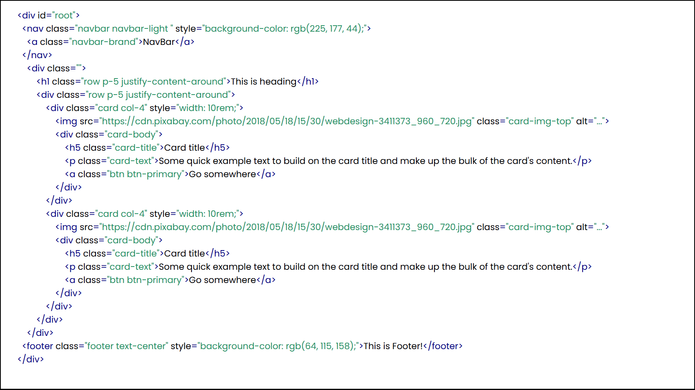

WebAR: Realtime webpage generation in AR

5 minutes
Introducing to WebAR
WebAR is an AR-based layout builder that lets you create the structure of a webpage in your real environment — like placing headers, paragraphs, and div containers directly on your table. Think of it as wireframing meets spatial computing. Using intuitive hand or touch-based AR interaction, you can customize layout styles, set colors, and arrange content blocks both vertically and horizontally. Once done, simply submit your layout — the app generates a structured JSON and sends it to a server that instantly converts it into clean, responsive HTML and CSS code.
Key Features
- AR Layout Builder: Scan any flat surface and instantly anchor an interactive layout space in your real environment. Build your webpage right on your desk — spatially and intuitively.
- UI Element Placement: Choose from layout blocks like headers, footers, grids, and paragraphs. Drag and drop elements to create horizontal or vertical.
- Live Customization in AR: Instantly tweak colors, alignments, and structure of your layout directly in AR before generating code — making design both visual and fun.
- JSON-to-HTML Code Pipeline: Your layout is converted into a structured JSON, then parsed server-side into responsive HTML and CSS code — clean, production-ready, and ready to use.
- Live Sync with Connected System: Once submitted, your code is instantly generated and made live on your connected desktop/laptop, turning your AR design into a real webpage in seconds.
Inside the Build: Behind the Scenes of WebAR
This is one of my oldest projects — I started it back in my college days when I was
just getting into Unity and web development. I had this idea: what if we could
design websites directly in Augmented Reality? That thought stuck with me, and I
began building it piece by piece.
Even now, after a few years and many more projects, I still believe the concept is
super cool and has a lot of unexplored potential.
In this section, I’m sharing the full architecture of the app — how it works under
the hood, how layouts are built in AR and converted into code, and how the final
webpage is rendered on a connected device.

Future Development
After working on many projects since building this one, I’ve come to realize that the
most important part of any project is not just the technology — but how usable and
interactive it is for real people.
Now that I’m deeply involved in Mixed Reality development, I see huge potential in
evolving WebAR into a full MR application. With hand tracking, spatial UI, and
support for 3D objects, meshes, and virtual tools, the experience can become far
more intuitive and immersive — allowing users to design, build, and interact with
web layouts in a truly 3D environment.
This project laid the foundation, and now it feels like the perfect time to take it
to the next level.